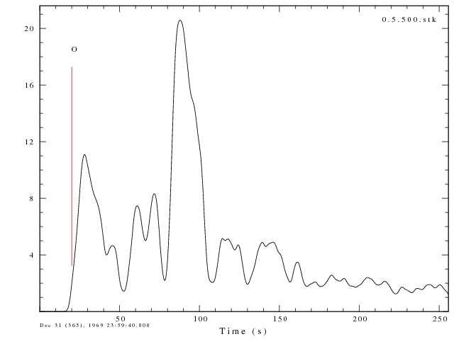

Estimating Source Time Function Using
Empirical/Synthetic
Green's Function
Introduction
For most seismologists, large earthquakes are interesting not only
because of the effects caused but also because of their size. One
unresolved question is "what causes an earthquake to be big?" This may
be answered in the future through a better understanding of what
actually occurs during a large earthquake in terms of which parts of
the fault move, how much do they move, and how fast. Methodologies
exist to perform a finite fault inversion, which entails using the
information from seismographic recordings to image the rupture process
on the fault plane. Such analysis requires computaion. Detail
fault rupture analysis has implications for estimating the shaking
effects near an earthquake by characterizing the rupture plane and the
rupture direction.
In the context of hazard estimation, response time is important. The
question arises whether it is possible to quickly determine if the
rupture process was simple or | complex. One way to make a simple
determination is try to determine an average source time function for
the earthquake.
Installation
The file DECON.tgz contains the directory
structure and processing scripts to perform the deconvolution.
After downloading, execute the following command to unpack the
distribution:
gunzip -c DECON.tgz | tar xvf -
which will unpack the following files and directories:
DECON/PROTO.EMP/
DECON/PROTO.EMP/DOITEMP
DECON/PROTO.GRN/
DECON/PROTO.GRN/DOMKSYN
DECON/PROTO.GRN/DOITGRN
These scripts use the programs saclhdr,
saciterd and gsac. To do the graphics we need the
GraphicsMagick gm (the
ImageMagick convert can
be used by slightly modify the script) and GMT for the map displays.
The scripts are discussed in the following links:
- Empirical Green's Function Processing:
- Synthetic Green's Function Processing:
Execution
Assume that we have already prepared teleseismic data by removing the
instrument response, rotating traces, and QC'ing waveforms and that
they are placed on the system in the order used for telemseismic source
inversion or for using teleseismic for quality control. We will set up
the processing using empirical and synthetic Green's functions.
Let directory for the deconvolved, rotated, QC'd wavforms for the large
earthquake be
/home/rbh/PROGRAMS.310t/MOMENT_TENSOR/MECH.TEL/20070815234057/DAT.TEL
and let the directory for the small earthquake used as an empirical
Green's function be
/home/rbh/PROGRAMS.310t/MOMENT_TENSOR/MECH.TEL/20070818025235/DAT.TEL
Now go to the DECON directory created by unpacking the DECON.tgz file
and create two new directories:
mkdir 20070818025235.EMP
mkdir 20070818025235.GRN
Now copy the prototype files into the appropriate directory, e.g.,
cp PROTO.EMP/* 20070818025235.EMP
cp PROTO.GRN/* 20070818025235.GRN
Finally edit the files in these two directories as follow:
Edit the 20070818025235.EMP/DOITEMP
to change the lines
DIRBIG=path_to_big_event_waveform_directory
DIRSMALL=path_to_small_event_waveform_directory
to
DIRBIG=/home/rbh/PROGRAMS.310t/MOMENT_TENSOR/MECH.TEL/20070815234057/DAT.TEL
DIRSMALL=/home/rbh/PROGRAMS.310t/MOMENT_TENSOR/MECH.TEL/20070818025235/DAT.TEL
Edit the 20070818025235.GRN/DOITGRN
to change the line
DIRBIG=path_to_big_event_waveform_directory
to
DIRBIG=/home/rbh/PROGRAMS.310t/MOMENT_TENSOR/MECH.TEL/20070815234057/DAT.TEL
Also edit the mechanism and source depth lines to use the values
expected for the big earthquake:
STK=171
DIP=55
RAKE=112
HS=30
MW=5.0
You are now ready to run the codes:
For the empirical Green's function technique
cd 20070818025235.EMP
DOITEMP
For the synthetic Green's function technique
cd 20070818025235.GRN
DOITGRN
Example and Testing
Peru earthquake of August 15, 2007.
This Mw = 8.0 earthquake occurred at 23:40:57.890 UT, had a depth of 39
km, latitude and longitude of -13.39 and -76.60, respectively. We will
attempt to define the source time function by comparing this to the
Mw=6.0 aftershock on
August 18 at 02:52:35 and to synthetic seismograms for a typical
mechanism for the region. Fortunately this earthquake was studied by
Gavin Hayes of the USGS. Gavin derived a finite fault solution and an
averaged source time function.
His finite fault solution and fault averaged (?) moment release is
givne in the two figures:
Empirical Green's function deconvolution
For this event we edit the DOITEMP script in the PERU.EMP directory do
define the directories containing the waveforms for the main event and
the event used as an empirical Green's function:
DIRBIG=/home/rbh/PROGRAMS.310t/MOMENT_TENSOR/MECH.TEL/20070815234057/DAT.TEL
DIRSMALL=/home/rbh/PROGRAMS.310t/MOMENT_TENSOR/MECH.TEL/20070818025235/DAT.TEL
We then execute the script DOITTEMP. The individual station
deconvolutions are given in the directory DECONDIR.
In addition several image files are created:
HZ.0.5.map.png - A map of stations whose traces were used with
ALP=0.5
HZ.1.0.map.png - A map of stations whose traces were used with
ALP=1.0
Zdecon.0.5.gif - an azimuthal record section of the individual
deconvolutions for ALP=0.5
Zdecon.1.0.gif - an azimuthal record section for ALP=1.0
In addition I ran the following gsac commands to get an average of the
deconvolutions:
for ALP in 0.5 1.0
do
gsac << EOF
r DECONDIR/*.${ALP}.decon
stack norm on
w ${ALP}.stk
r ${ALP}.stk
filedid name
bg plt
plotnps -F7 -W10 -EPS -K < P001.PLT > t.eps
echo using the GraphicsMagick package to convert from eps to png
gm convert -trim t.eps ${ALP}.stk.png
q
EOF
done
Here are the images:
ALP=0.5
|
ALP=1.0
|

|

|
|
|
|
|
We note some similarities between the stacked deconvolutions and the
average time function from the finite fault simulation. The
effect of using ALP=1.0 is to incorporate higher frequency detail into
the estimation. The record sections plotted with azimuth are
scaled according to the largest amplitude of all of the
deconvolutions. Although the azimuthal sampling is not uniform,
there are larger, more compressed waveforms in the direction of rupture
progression (141 degrees) than in the opposite direction (321
degrees). This agrees with the more detailed finite fault simulation in
which the rupture propagates up dip and in the direction of 141 degrees.
The next test is to compare the results of using 100 versus 500 bumps
in the deconvolution procedure for ALP=0.5:
-N 100
-ALP
0.5
|
-N 500
-ALP
0.5
|
|

|
A feature of using 500 bumps is the increased area under the curve. The
sense of an initial event followed 60 seconds later by a larger pulse
carries through.
Synthetic Green's function deconvolution
To use synthetics for the small event, we copy the two scripts in
PROTO.GRN to PERU.GRN. We then edit the DOITGRN script to provide the
location of the seismograms for the main event and the typical
mechanism for the region:
DIRBIG=/home/rbh/PROGRAMS.310t/MOMENT_TENSOR/MECH.TEL/20070815234057/DAT.TEL
#####
# define the mechanism and depth for the synthetics
# These values can be obtained from the regional
# averages of mechanisms using the new code
# STK = strike
# DIP = dip
# RAKE = rake
# HS = sourrce depth in km
# MW = this is the reference MW, in theory the zero frequency
# level of the derived source time function is the moment ratio
# of the two events, e.g., a ratio of 1000 corresponds to a
# delta Mw of 2.0, so if thw reference Mw=5 then the big event has Mw=7!
#####
STK=171
DIP=55
RAKE=112
HS=30
MW=5.0
We get the average source parameters by running the new USGS code
EarthquakeParams.jar through the command line
java -jar EarthquakeParams.jar -radial -13/-76.6/3 -d 0/60 -cn
-mt
The output of this command is in the file mtformat.out, the first 15
lines of this file are
Composite Mechanism
Strike Dip Rake
171 55 112
MT Format
Radial Search Center Coordinates: -13.00, -76.60
Radial Search Distance (in deg): 3.0
E P I C E N T E R | MOMENT | M O M E N T T E N S O R
DATE TIME (UTC) LAT LONG SRC|DEPTH VAL EX HALF|SRC EX C O M P O N E N T S
YR MO DA HR MN SEC deg deg | km Mw Nm DUR | Nm MRR MTT MFF MRT MRF MTF
---------------------------------------------------------------------------------------------------------------
1976 05 15 21:55:58.50 -11.640 -74.480 MLI| 33.0 6.7 1.7 19 5.7|GCMT 19 0.78 -0.05 -0.73 -0.31 1.41 0.27
1977 03 08 13:08:56.30 -11.960 -74.200 MLI| 41.0 5.5 2.6 17 2.4|GCMT 17 0.93 0.02 -0.95 -1.32 0.45 2.13
1980 06 15 23:47:15.00 -15.520 -75.240 MLI| 26.0 5.8 6.2 17 3.0|GCMT 17 2.74 0.73 -3.46 -0.24 -4.97 1.97
the procedure of this script is to use hudson96
to make synthetics for an Mw=5 earthquake. We will look at the
deconvolutions for ALP=0.5 and 1.0 again as above.
We will also examine the effect of the assumed source depth on the
dseconvolutions:
-N 100
-ALP
0.5
|
-N 100
-ALP
1.0
|

|
|
|
|
|
|
In this case we have more azimuths than for the empirical technique
since we do not have to worry about the S/Nfor the small event. However
we may be affected by instrument response problems which divide out in
the empirical technique. We may conclude rupture in the opposite
direction from this presentation.
There is more similarity to Gavin's time function, perhaps because both
use synthetics.
The next test if to consider the sensitivity to the assumed source
depth. We consider source depths of 10, 15, 20, 25, 30, 35, 40 and 45
km in the AK135D model.
The figure shows that the double pulse feature is common to all, but
that the amplitudes of the two main pulses is affected by sthe assumed
source depth, and henc the corresponding moment ratio of the mainshock
to the Green's function, since the area under and trace is
proporational to the moment ratio.
There is signiicant sensitivity in the deconvolved source pulse to the
assumed source depth for the Green's function used to make the
predicted motion. This would imply different moment ratios.
Some of the sensitivity may be due to the variation in material
properties with depth, with the P velocity increasing from about 6 km/s
near the surface to about 8 km/s beneath the Moho wile the density
might increase from 2700 to 3300 kg/m^3. Since the teeleseismic
amplitude is proportional to Mo/(rho Vp Vp Vp) for the P wave, the
teleseismic amplitude for the small Green's event would be decreased by
a actor of roughly 2.9, which is what we see in the figure. This
simple analysis ignores any of the effects of the depth phases.
Last changed August 14, 2009